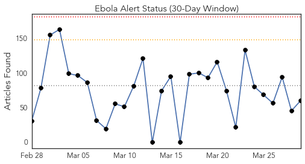
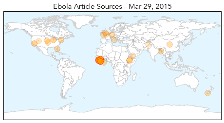
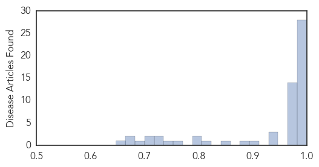

Ebola
30-Day Web Trend
0 alerts, 0 warnings

30-Day Twitter Trend
0 alerts, 0 warnings

Article Locations
Article Confidences
Top Articles:
- 1.000
- Liberia calls for sexual abstinence to cut Ebola transmission risk
- 1.000
- US Patient Under Monitoring Suffers Cardiac Arrest While Jogging
- 1.000
- Ebola toll passes 4,000 as fears grow worldwide
- 1.000
- UPDATE 2-Liberia urges sexual caution to beat Ebola outbreak
- 0.999
- UN Ebola head warns against complacency as fight enters last lap
- 0.999
- Sierra Leoneans to stay home in final push to stop Ebola
- 0.999
- Nebraska health care worker being monitored for Ebola has unrelated health issue- hospital
- 0.999
- Sierra Leone Under 3-Day Ebola Lockdown
- 0.999
- Ebola effect! Guinean President Alpha Conde declares 45-day 'health emergency'
- 0.999
- Sierra Leoneans to stay home in final push to stop Ebola
- 0.999
- Sierra Leoneans to stay home in final push to stop Ebola
- 0.999
- Liberia urges sexual caution to beat Ebola outbreak
- 0.999
- 45-day Ebola 'health emergency' declared in 5 Guinea regions
- 0.999
- Africa Still Lacks Clean Bill of Health
- 0.999
- Liberia's last #Ebola patient dies from virus
- 0.999
- Ebola Virus Patient in Liberia Dies
- 0.999
- Liberia’s only remaining known Ebola patient dies
- 0.998
- Guinea 'Emergency' Aimed at Stemming Spread of Ebola
- 0.998
- New Emergency Measure for Ebola Outbreak ready in Guinea
- 0.998
- 45-day Ebola 'health emergency' declared in 5 Guinea regions
- 0.996
- UN Ebola head warns against complacency as fight enters last lap
- 0.995
- Ebola crisis is not yet over, says Christian Aid
- 0.994
- UN Ebola head warns against complacency
- 0.994
- Guinea declares Ebola 'health emergency' in five regions
- 0.993
- CDC Press Release-Ebola in West Africa: The Importance of “Getting to Zero”
- 0.992
- USAID’s Carroll urges forging global health partnership for security against diseases
- 0.990
- 3 West African countries increase fight to end Ebola
- 0.988
- Ebola doctors come home: AfDB joins ECOWAS and Government of Côte d'Ivoire in welcome ceremony
- 0.982
- Ebola Veterans Warn That Vigilance Is Still Needed as Case Numbers Drop · Global Voices
- 0.982
- #Ebola more deadly for young #children
- 0.981
- Kiwi nurse Bronni McBain tells of Ebola scare
- 0.980
- Former Maryland governor: US needs new perspectives
- 0.980
- Ailing WWII vet tries to get home; GoFundMe page set up
- 0.976
- WHO steadfastness in the fight against Ebola
- 0.976
- WHO reiterates continued support to defeat Ebola
- 0.975
- 3 West African countries increase fight to end Ebola
- 0.975
- WHO reiterates continued support to defeat Ebola - Xinhua
- 0.974
- Guinea Declares 45-Day "Health Emergency" Over Ebola Crisis
- 0.974
- Worse than war: my year fighting Ebola in Africa
- 0.972
- Tensions between Sierra Leoneans and Police Rise as Ebola Lockdown Ensues
- 0.970
- 3 West African countries increase fight to end Ebola
- 0.966
- Study discloses Ebola’s impact on young children
- 0.945
- Sierra Leone On Lockdown
- 0.937
- RFA Argus honoured as she completes Sierra Leone deployment
- 0.930
- Ebola rapid diagnostic kit developed by UK scientists in Sierra Leone
- 0.906
- "We have to remain vigilant"
- 0.887
- Guinea patrols border as Sierra Leoneans flee Ebola lockdown
- 0.852
- EBOLA OUTBREAK UPDATES---March 29, 2015
- 0.810
- Police fire tear gas on crowd during Sierra Leone Ebola lockdown
- 0.804
- Police fire tear gas on crowd during Sierra Leone Ebola lockdown
Showing top 50 articles...
Top Tweets:
- 0.981
- Patient Monitored For Ebola Has Medical Emergency While Jogging - WOWT http://t.co/xNfpGoMhKX ebola EVD
- 0.959
- Lockdown welcomed in Ebola-weary Sierra Leone - Al Jazeera America http://t.co/q0bYUgsa1D ebola EVD
- 0.909
- Patient monitored for Ebola has cardiac issue while jogging - KMTV http://t.co/RcFqoTqXM3 ebola EVD
- 0.909
- Patient Monitored For Ebola Has Cardiac Issue While Jogging - WOWT http://t.co/u9uFv0umqh ebola EVD
- 0.909
- Patient Monitored For Ebola Has Cardiac Issue While Jogging - WOWT http://t.co/mDq7o04LXH ebola EVD
- 0.907
- Guinea declares Ebola 'health emergency' in five regions - BBC News http://t.co/UsDw7yxzQ2 ebola EVD
- 0.894
- Kiwi nurse Bronni McBain tells of Ebola scare - Taranaki Daily News http://t.co/H0ZCaiz2nL ebola EVD
- 0.842
- Former Alexandrian reflects on stint as Ebola nurse - Rock Hill Herald http://t.co/PXNogvc0F8 ebola EVD
- 0.760
- Liberia Recommends Ebola Survivors Practice Safe Sex Indefinitely - New York Times http://t.co/8JzfSxahap ebola EVD
- 0.734
- Indefinite Safe Sex Urged for Liberian Ebola Survivors - New York Times http://t.co/o5pRLvU2yE ebola EVD
- 0.694
- Dallas Morning News wins statewide honors for Ebola coverage, other work - Dallas Morning News http://t.co/KUBKXUHkZH ebola EVD
- 0.674
- RT: BBC: Guinea declares Ebola 'emergency' - Guinean President Alpha Conde has declared a 45-day "health emergency" in... http://…
- 0.633
- Ebola Veterans Warn That Vigilance Is Still Needed as Case Numbers Drop - Global Voices Online http://t.co/g9oJyAvBOl ebola EVD
- 0.602
- RT: Ebola cases in SL are being pushed into a corner. This map from UNMEER shows cases in the 7 days to 25 March 2015. http://t.…
Bubonic Plague
30-Day Web Trend
0 alerts, 0 warnings

30-Day Twitter Trend
0 alerts, 0 warnings

Article Locations

Article Confidences

Top Articles:
-
No articles found for Mar 29, 2015
Top Tweets:
-
No tweets found for Mar 29, 2015